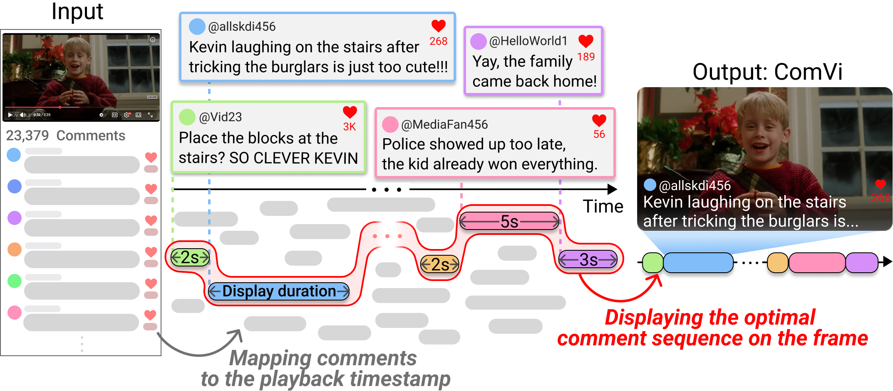
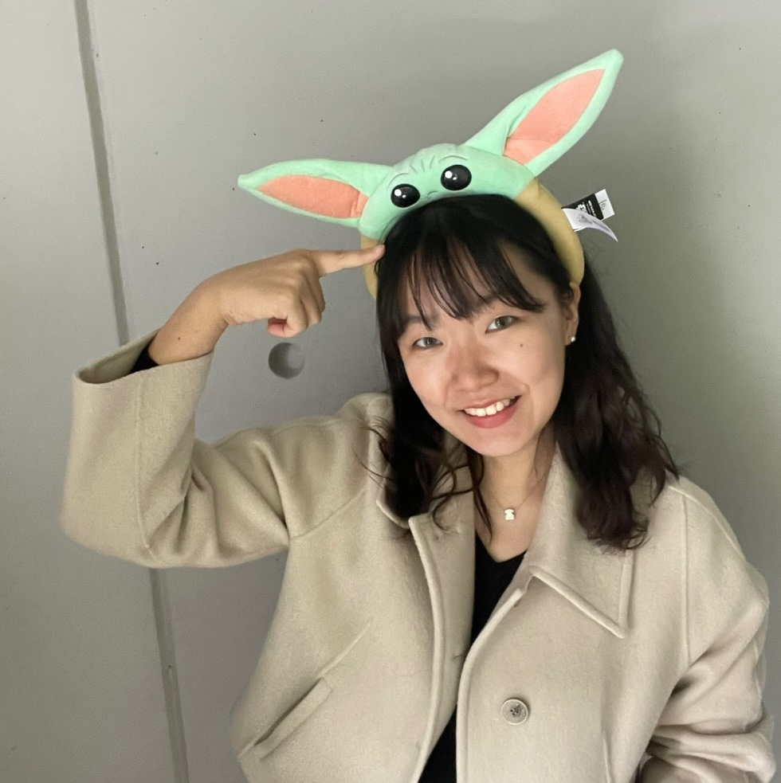
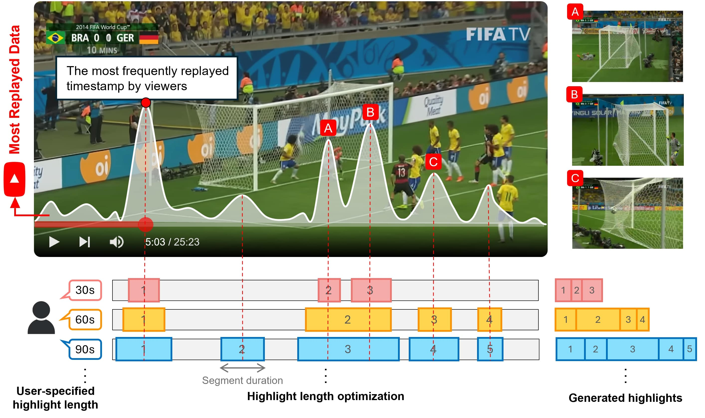
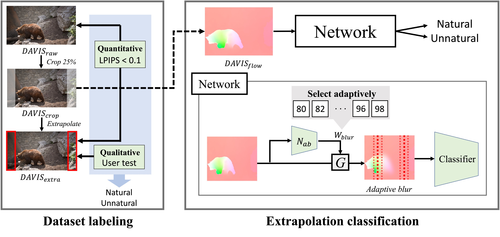

sunnykimhappy@gmail.com
I am a researcher working on video editing and content technology, having recently completed my master's at the KAIST Graduate School of Culture Technology, Visual Media Lab, advised by Prof. Junyong Noh. I'm currently interning at Adobe in San Jose, working on video repurposing with VLLMs under Dr. Joon-Young Lee.
With Sora, Veo, and the wave of generative video models, anyone can now conjure a clip from imagination. Producing footage is no longer the hard part. What I find genuinely interesting — and increasingly critical — is everything that happens after the clips exist: the cutting, the pacing, the structuring of fragments into coherent narratives that hold together and are worth someone's time.
My goal is to research the technologies — be it Human-Computer Interaction, Computer Vision, or Computer Graphics — that make this craft of editing and directing more accessible, more efficient, and ultimately better. I want to live in a world with more high-quality content in it, and I'd like to help build the tools that get us there.


